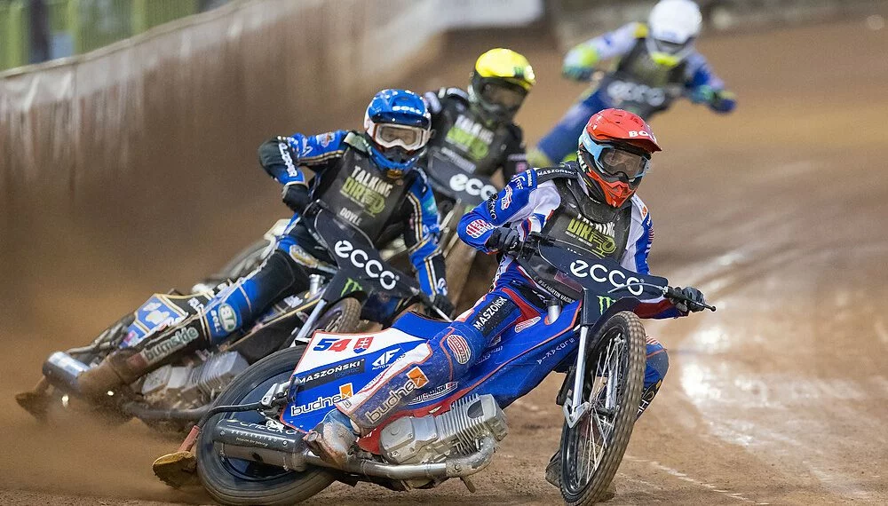

Grand Prix - Elitarna Rywalizacja o Indywidualne Mistrzostwo Świata
Cykl FIM Speedway Grand Prix to najważniejsze indywidualne rozgrywki w żużlu, wyłaniające Indywidualnego Mistrza Świata. To tutaj spotykają się najlepsi zawodnicy z całego globu, by rywalizować o najważniejsze trofeum w "czarnym sporcie".
Historia i Format Cyklu
Indywidualne Mistrzostwa Świata na żużlu mają bogatą historię sięgającą 1936 roku. Format Grand Prix został wprowadzony w 1995 roku, zastępując jednodniowy finał. Od tego czasu, mistrza wyłania się na podstawie punktów zdobytych w serii turniejów (rund) rozgrywanych na różnych torach na świecie.
Każda runda Grand Prix to osobny turniej, składający się z 20 biegów fazy zasadniczej, dwóch półfinałów i jednego finału. Punkty zdobyte w poszczególnych biegach i końcowej fazie turnieju sumują się do klasyfikacji generalnej cyklu.
Uczestnicy Grand Prix
W cyklu Grand Prix startuje zazwyczaj 15 stałych uczestników (zwycięzcy poprzedniego sezonu, kwalifikanci z cyklu Grand Prix Challenge, stali dzikie karty) oraz jeden zawodnik z dziką kartą na każdy turniej. To elitarne grono, w którym każdy zawodnik to światowa czołówka.
Polscy żużlowcy od lat odgrywają kluczową rolę w Grand Prix, a wielu z nich zdobywało tytuły mistrzowskie, w tym Tomasz Gollob i Bartosz Zmarzlik, którzy są ikonami tego sportu.
Niezapomniane Emocje
Grand Prix to gwarancja niezapomnianych emocji. Szybkość, ryzyko, zacięta walka o każdy centymetr toru i często zmieniająca się sytuacja w klasyfikacji generalnej sprawiają, że każdy turniej jest niezwykle widowiskowy. Decydujące biegi finałowe to prawdziwy majstersztyk sportowy.
Polska jest ważnym przystankiem w kalendarzu Grand Prix, z rundami rozgrywanymi na największych i najbardziej renomowanych stadionach, przyciągających dziesiątki tysięcy kibiców.
Kalendarz i Wyniki (Przykładowa tabela)
Poniżej znajdziesz aktualny kalendarz turniejów Grand Prix oraz tabelę klasyfikacji generalnej.
Klasyfikacja Generalna FIM Speedway Grand Prix (stan na [aktualna data])
| # | Zawodnik | Narodowość | Punkty |
|---|---|---|---|
| 1 | Bartosz Zmarzlik | Polska | 120 |
| 2 | Leon Madsen | Dania | 105 |
| 3 | Fredrik Lindgren | Szwecja | 98 |
| 4 | Jack Holder | Australia | 90 |
| 5 | Martin Vaculik | Słowacja | 85 |
| 6 | Maciej Janowski | Polska | 78 |
Kalendarz FIM Speedway Grand Prix 2025
- 12 Kwiecień: PZM Warsaw FIM SGP of Poland
- 26 Kwiecień: Croatian FIM SGP
- 17 Maj: Orlen FIM SGP of Poland - Gorzów
- 31 Maj: Czech Republic FIM SGP
- 14 Czerwiec: PRAGA FIM SGP of Czech Republic